谈死亡四则
近一个月听了三期史提夫说的博客都触及了死亡议题。每听完一期，都引发我很多思考。对死亡的回避背后更广泛的问题是对人类脆弱性的回避。 “据说没有一棵树的枝桠可以触及天堂，除非它的根须扎进地狱”。对死的讨论本质上是对生的讨论。有些蓬勃需要见过狰狞才能被解锁。
其一：胁迫
Steve和抗癌8年的阿娇对话。
这期博客前所未有地长，持续了2.5小时。我在9月有一天上午先去景山公园随后又去健身房，在这期间一口气听完了它。这个对话让我在很深的无奈和难过中沉浸了很久。
对话的后半段超越了简单的“当今社会死亡议题缺失”这种吐槽和呼吁，而是落在了“当生极度痛苦，而死反而很容易的时候，为何不死”。
阿娇说，不死是因为无能。她的病友有很多都选自了死，在阿娇看到病友是更有勇气的。这和托尔斯泰的想法如出一辙。
托尔斯泰在《忏悔录》中将人们面对生命无意义时的反应归纳为以下四种：第一种：无知。第二种：及时行乐。第三种：依靠力量和精力自杀。
第四种：活着。在托尔斯泰看来，第三种是英勇的，第四种是懦弱的。
我的无奈与难过，并不源于听到一个身患绝症的人在生和死面前总是被动地，出乎意料地，选择生。而是因为她将其背后原因解读为懦弱。
或许我原本盼望听到的一个答案是：但是这一切都太过美丽。。。
阿娇有惊为天人的身体觉知。癌症和手术接二连三为她打开觉知层面的新天地。她对身体觉知的探索已经登峰造极，
也对身体究竟有多大本能让一个人活着也有着极其罕见的体验。她说她每一次“感官升级”后，都觉得应该没有什么还没打开的感受器了吧。。。
可是下一次还有。当然这里有一万个理由来说解锁一般人解锁不了的感受器是一件极度痛苦，无人羡慕的事。
因为她所讲述的身体觉知，大多数都是“对濒死的觉知”，“对濒死的时候身体似乎不想让你死的觉知”，
“对濒死的时候身体在力挽狂澜但是意识薄弱赶不上趟的觉知”。。。
可是我依旧盼望听到她说，单纯从觉知的层次和丰富度上来讲，她的生命体验让她看见了一种极其罕有的，反直觉的，弥天亘地之美。
基于这期博客的嘉宾和话题，无论怎样大面积袒露生而为人之荒诞，失序，寡情，和不义，都会在我预期之内。
唯一能让我觉得“喜出望外”就是哪怕仅有一句话点出了“美”。
可惜没有。
大面积袒露出的积怨，无奈，惊惧，抽离，和束手无策，将天枰一端压到刻度已经测量不到的位置。
她早已不能运动，这意味着不能通过物理方式发泄。她渴望短跑冲刺的体验。她一年有100天住院。
她时常觉得“我只要不作为，我一周之内就可以死掉”。可偏偏，她仿佛被胁迫着，选择生。
而天平另一端，没有一滴企图平衡的力量。或许，比杯水车薪要更加悲伤是连一滴水也没有。
她分享自己无法选择死的原因的时候，还提及了她有一个人生遗憾，是想回到小时候，对死亡仅有很单纯简单的看法的时候，
因为那样也许就可以冲动的选择死。但现在人已经太过复杂化，导致无法做出一个如此简单的抉择。
我想如果我来带入她，我可能会说我没有选择死是因为我还有好奇，即便这种好奇是建立在烂泥，深渊，和各种黑暗骇人的东西之上的。
我可能会说我在感受如此之多的痛苦的同时，我每天还能感受到自己在爱着。注意不是“被爱着”而是“在爱着”。
死能结束我的痛但爱着的感受也将一并终结。
可惜她也没有将“我在爱着”当作一个合理的对“为何不死”的回答。
她过去经历过很多创伤。而如今，她又深陷一场持续不断的带来新创伤的浩劫。她没有余力去处理旧日的创伤，去疗愈，去开启第二次人生。
她最后的坦言让我觉得，对她过往创伤的辨认和清理，似乎毫无帮助。她无法支付这些时间和精力，得不偿失。
她现在在竭力寻求一些可在短期内实施的方法 —— 最好在接下来两个月内就可以付诸实践 ——
能让她在自己的人生中感受到唯一一次安全：在另一个人面前感到全然的安全。
她将这个问题抛给Steve。我为Steve感到力不从心。她的目标既简单又难以置信地宏大。这几乎不可能。
可就连告诉她这不可能也已经显得如此残忍。她已经经受过数不胜数的残忍。一方面，她或许已经习惯了 ——
无论这份超群的耐受其原形是铠甲，是茧皮，是智慧，还是某种内心的宽阔。
另一方面，我似乎把她讲述的“太过懦弱所以死不掉”，“从未安全过”，和反复确认“是否有另一个人也体验过安全感消失殆尽”这种行为串联起来了。
她最终的诉求，令我意外。随之而来的是大面积的惋惜，我仿佛被钟罩扣住。钟罩内壁涂满了“人生长恨”的“恨”字。
我的惋惜，毫无指责意味。如果这是一场模拟游戏，可能我想提议对游戏底层代码作出的修改，
就是令她生来浪漫。即便这听来只是一个空无一物的祈愿。
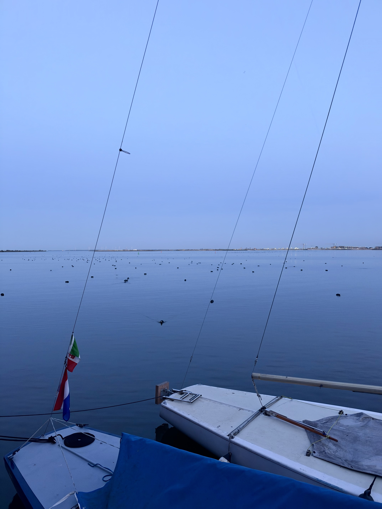
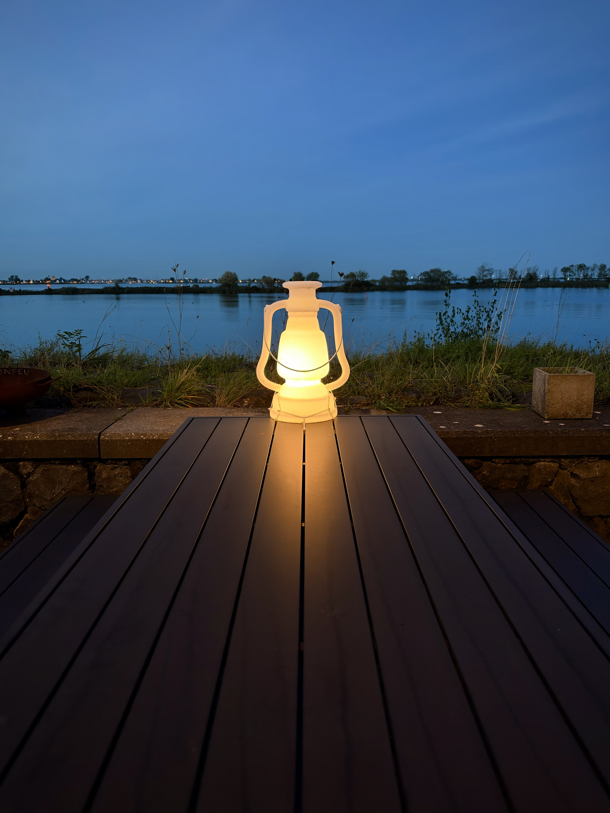
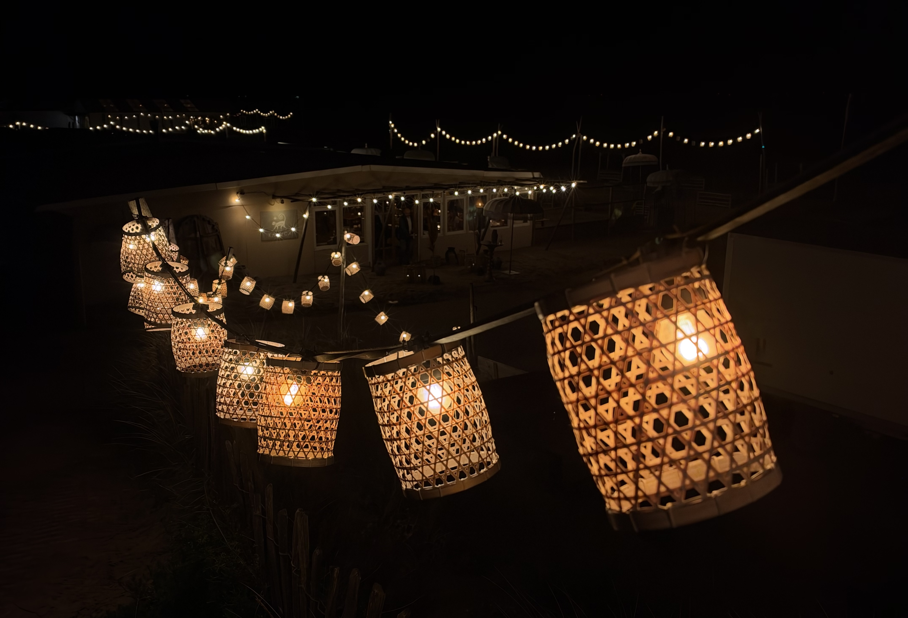
其二：沟壑
阿娇说“我希望我死的时候我身旁空无一人。”，并且劝告世人，对死亡话题的普遍回避就让它被回避着吧。。。“大家不用把对死亡的恐惧这么早兑现。”
阿娇说对她来说最难受的不是病痛，而是孤独。
我体验过这种孤独的低配版。
我体验过对他人向我投递的同情感到倦怠。假设我身上有一个洞在漏血，同时我今天又不小心割破了手指。
然而人们的同情不约而同地投向我的手指，那个在漏血的洞却被忽视。在这种情况下我不会对得到的同情感到感激。
我会愤怒，怨恨，然后不得不面对这背后的孤独。
阿娇在对话末尾问了Steve多个问题。这些问题都让我感觉是在反复确认Steve人生中是否有过某一时刻是感觉自己完全不被爱，
没有安全感，不会被托住的。
Steve每次面对这样的问题都想了想然后说“没有诶”。Steve的回答是很坦诚的。不过如果我带入阿娇我会感到很大的失望和情感上的断连。
我同意双方都坦诚地识别并抛出了“自己和对方之间存在很大的不一样”这类话语。这种姿态是前倾的，热情的，促进连接的。
但这之外的是一个不可弥合的沟壑 —— 由于经历的差异导致的根本上的，无论一个人共情力，专业度，认知和理解力多高，都无法弥合的沟壑。
这个沟壑让我望而生畏。
不可预测和调控的人生经历会为个体创造一个独属于他自己的沟壑，并把他推向属于他自己的沟壑的另一端。
造成的局面将是：“我在这端，人们在那端”。
阿娇全程都没有哭。癌症没有让她觉得感到人类的脆弱性是美丽的。癌症让她对人类的脆弱性感到压抑和无奈。
我觉得如果这是我的经历，而我又在和Steve这样的人面对面铺陈，我一定会哭很多次。或许我会在点出“弥天亘地之美”的时候声泪俱下。
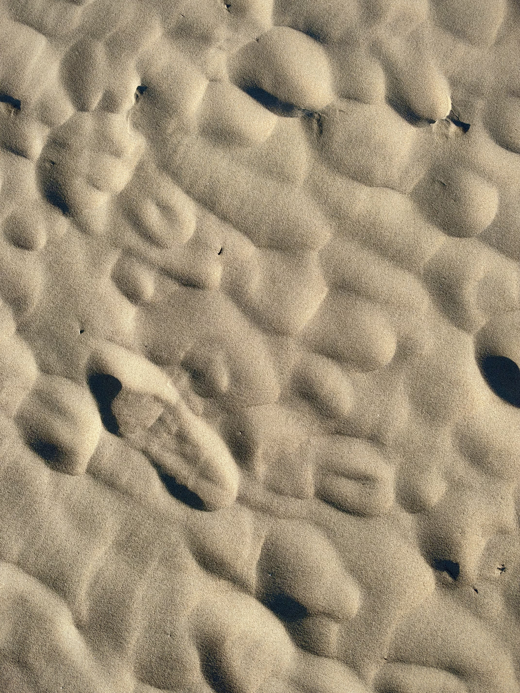
其三：汪洋
我感觉这个世上存在两种类型的人。一种是浪漫的。另一种，说成“不浪漫”较为不妥，但我也找不到能清楚释义的词。
我属于浪漫的那种人。我的人生终极追求是看见美。Steven曾说他在他作为咨询师的工作中很喜欢重构（reframing）。
我也喜欢重构，喜欢把一件事翻过来看它的反面，然后欣赏两级是如何既对立也互补的，它们是如何互成因果，相生相灭的。
但是我的这些重构或者类似逻辑上的工作，是在铺路，为了让路径引向美。并且我认为美是一种汪洋大海一般的存在。假设从陆地上某点出发，
无论路径多么曲折，多么山重水阻，一旦我把一条路开通到大海了，就不用担心后面的了，因为在这个情境下不存在“假的大海”这一说。
在这个情境下汪洋大海是绝对的，不存在“眼前看到的海可能是岛中湖”这一说。或者抛开比喻来讲，
我无需担心汪洋大海般的美会不会实际上又是一种心理防御，逃避，或合理化的变体。
但是第二种人的世界里是没有汪洋大海的。我不知道他们的世界里有没有与之对应的东西。我很好奇很想知道。
我对第二种人的想象是很局限很不充分的，但是我很想知道他们的人生体验，观念的形成，和对各种刺激感受到的强度。
不过在这个问题上获取有价值的信息相当困难。因为我必定需要和第二种人聊天，且是长时间深入的聊天。但是我一般和这样的人聊天的时候，
如果意识到对方不是浪漫的人，我就会很容易感觉到对方的话语里没有美，或者没有被指向、影射、或暗示到的美。我会立即觉得索然无味。
我也很想知道究竟是不是真的存在两种人。存在两种人不意味着两个离散的区间。我们依旧可以认为有一个光谱。
我设想的“存在两种人”意味着这个分布是双峰的。若这个分布是单峰的，那么意味着不存在两种人，因为任何一种硬性切分单峰的方式都将看起来随机且毫无意义。
还有一种微小的可能是存在多个峰，甚至每一个峰内部还可以层级式下分。
国庆节那周我又听了第二期有关死亡的博客，聊到东亚家庭不谈论死亡，造成个体的脆弱性被普遍忽视。
国庆节某一天去给奶奶扫墓，全程我都是不知所措的。我不知道我应该预期多大程度的“凝重”。
奶奶的坟在一片玉米地里。我们在地里走了很远，沿途没有任何地标。我很惊讶他们怎么能记住位置。
大娘说：“这很容易啊，你看，不就在那棵柳树下面。那棵柳树是奶奶去世后不久种下的。”
扫墓有一个固定流程：烧纸钱，以汤浇地，磕头 。。。 整个过程中，我都密切留意着空气和风，时不时将目光聚焦于玉米杆和柳树皮，
像是在期待着什么东西能反射给我一些淡淡的关于死亡的感悟。基于文化的演化，所有仪式都有其存在的理由。它们的存在总该是在提醒我们些什么。
那么，我所目睹的这个仪式，究竟是要提醒我们什么呢？
我以为其他家人会因为扫墓的仪式，聊起一些不同的话题。但似乎并没有。他们仍然聊着日常琐事，比如谁离婚了，
谁开了一家小卖部，什么商品涨价了，等等。他们对扫墓仪式的态度如此轻松。我想，那天大概只有我一个人感受到了某种“份量”和鲜为人论的复杂……
一瞬间，我甚至开始批判自己：何必过度洞悉和省察？
爷爷最近吃饭开始出现打嗝现象。爸爸说奶奶当时在查出食道癌之前也是打嗝。但是爷爷84岁了去医院看也不会有医生愿意给他看，也几乎不可能动手术了。。。
治疗也只是保守治疗，甚至如果医生给下一个令人畏惧的诊断，反而会把人吓得更严重。
这又触发了我所谓的“过度省察”。社会背景会给人们带来对死亡的既成构想和认知边界。对此我不做非必要的插手。
我只是觉得，死亡值得被思考，被探讨，而不是被稀里糊涂，囫囵吞枣，甚至掩耳盗铃般地靠近。生是一件值得认真对待的事，死同样也是。
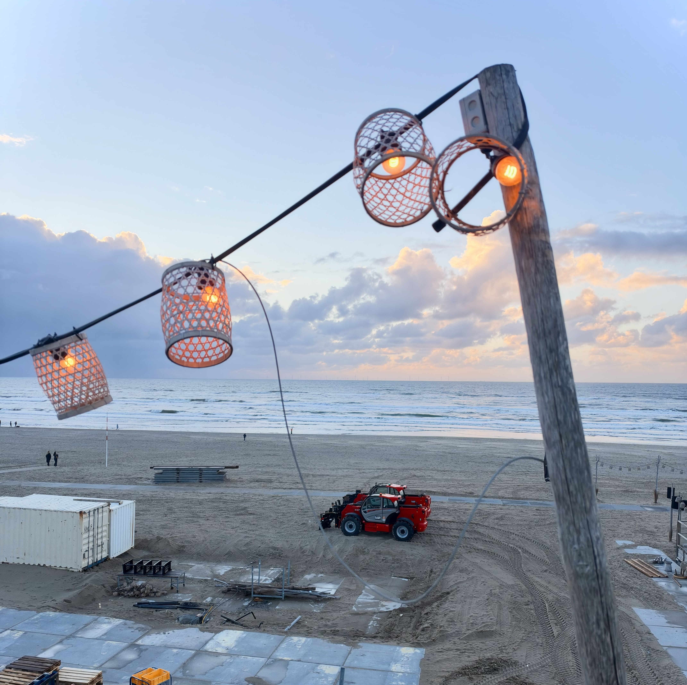
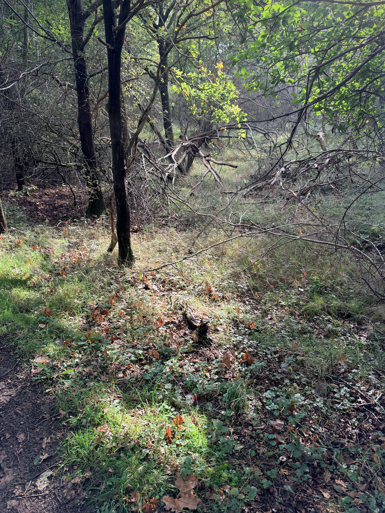
其四：流朱
后来，我又听了Steve最新的一期播客，嘉宾是一位葬礼策划师，名叫石慧。
两位谈话的人都是不儿戏，不回避，也不过度神秘化，对接踵而至的深刻问题拿得起接得住的人。作为殡葬策划师，石慧看到了太多人生百态。
葬礼退去了严肃得体的外壳，是一个无意识中权利和情绪的对撞之地。
一位年轻女孩自杀，生前声嘶力竭想要传递“信息”出去，可直至她的死亡，直至她的葬礼，“信息”也没有被收到。
她的家人依旧在无关紧要的事情上纷争，例如某些她的遗物（她最喜欢的二次元漫画周边）是否要下葬。家人觉得那些东西很脏。
大人对死亡避而不谈，小孩子在死亡意识萌芽的年龄好奇心被浇冷水，探索死亡或者“死法”会被大人认为“有疾病”。
我并不是对社会的进步视而不见，而是我认为一代人能完成的进步是有上限的。而且进步从思想者阶层渗透到其他阶层极为缓慢。
现下青少年自杀频率连年上涨，不是年轻的一代出问题了，而是问题一直都在，在年轻的一代这里终于暴露出来了，终于走进大众视野了。这事实上是一种进步。
甄嬛临产正逢失宠禁足期间，流朱撞在刀上用自己的死获得太医进寝宫的机会，才让甄嬛获救。
现在社会或者人类文明作为一个整体，是甄嬛。自杀逝者们，是一个个流朱。
石慧说自己女儿在9岁的一天忽然说想死。作为妈妈她说：“好啊。你想怎么死，有没有相中的死法？”
Steve大笑。我也大笑。
女儿说：“跳楼。”
妈妈说：“选好楼层了没有？楼层要是选的太低可能死不了反而瘫痪。”
“还有就是着地的姿势决定了后续殡葬师的工作难度。如果腿先着地那么骨头会瞬间碎成很多截，下葬前还要帮你拼起来 。。。”
我的心理咨询师的办公桌旁边放着一具骷髅头。起初我觉得这种室内布置的基调是如此黑暗。
可很快我就不这么认为了。因为我忽然想像出一幕：骷髅头是汪洋大海的代言。甚至，和它匹配的音乐应该是死亡诗社中如同金鸡唱晓的那一曲。
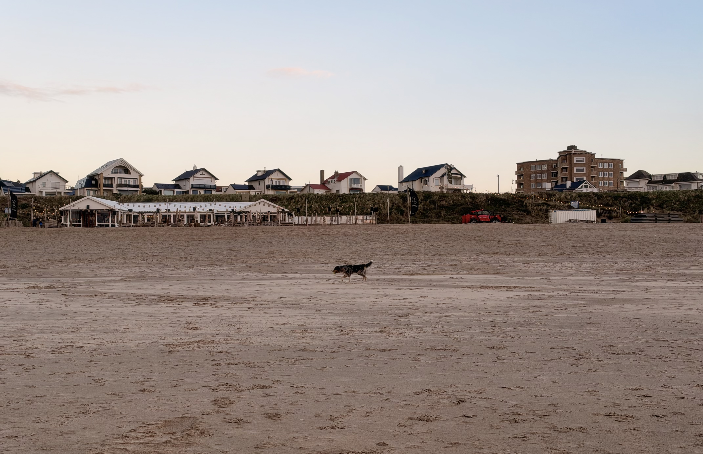
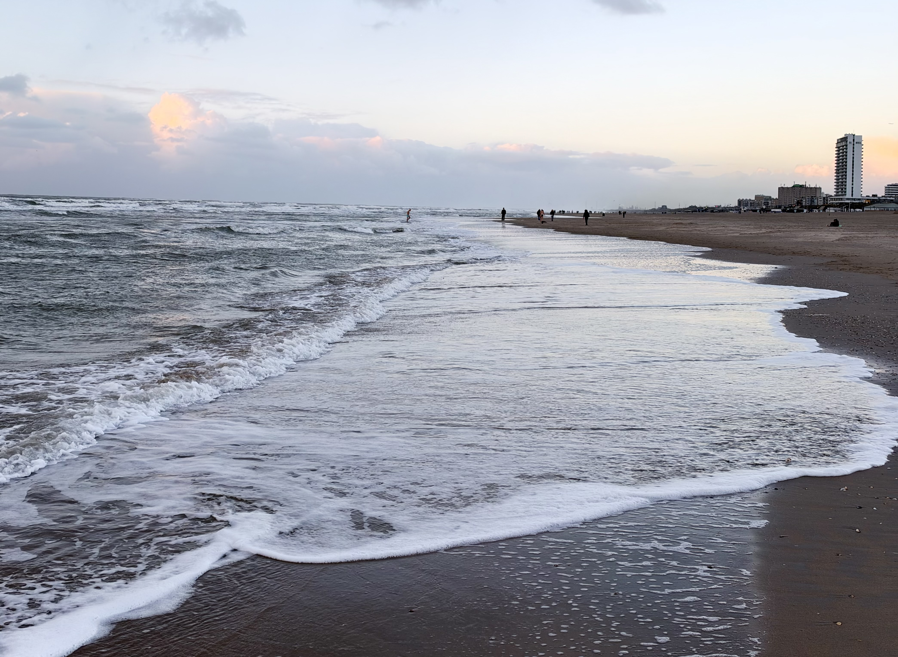
大风
最初的一个星期不可名状的伤感，现在推测出了些许原因：我以迅雷不及掩耳之势跳过了一个重大的收获季节。
而这个收割季，是用了长达三至四年的播种季换来的。我好似迅速地掠过了什么实际上应该花时间慢慢烹煮和品味的东西。
天空，带着未曾动摇的仁慈，瞩目着我哀悼一个自己施加于自身的损失。仿佛我的生命里有那么漫长的一年：
漫长的严冬，漫长的炎夏，，到了秋风四起该欣赏金色的麦浪的时候，宇宙忽然按下了一个“跳转至下一季”的键。随之我度了一个短暂的
元旦假期，紧接着，诶嘿！又到了耕耘播种的季节！！片尾曲呢？谢幕呢？彩带呢？上一部剧的大幕还没有拉上，下一部剧的大幕就已拉开。
我以四倍速翻过了一整个秋天的瓜熟蒂落，橙黄橘绿，天高地远。
眼前的景致是典型的秋天：枯黄的叶子，奔走的飞鸟，狂放不羁的风，裹着大衣的行人。
这次秋天给我的情绪指示，不是萧瑟，而是减速。昼夜更替的节奏需要从不辞辛劳地流转转向滑行。
对时光的烹调方式需要从翻炒转向酝酿和浸泡。
与之不和谐的是，我内在生命的节奏，似乎已经翻页至了新的一个需要辛勤劳作之春。
大风，扰乱了空气的秩序，引得一些不知其所的文字降落于此。街道普遍铺着红砖，降低了没有蓝天的秋日整体的灰度。
猫咪坐在围墙上不屑一顾地审阅人来人往。攀在整栋房屋上的藤蔓颜色橙红交加，呵护着熟睡，弱小，不愿被打扰，警觉，游荡，生来彷徨的魂魄。
小孩子坐在推车里，更小的孩子坐在胸前的背带里。老奶奶的头发像固执的杂草。自行车轮转了又转。狗狗在长椅前闻了又闻。
地上的喷泉想喷又喷不出来。送外卖的电动自行车涂着醒目的粉色。我的笔尖沉浸在书写中，吐露出从某个密闭空间艰难搜寻又拼凑起来的线索。
一个个行走而不知其目的地的人们，和想要与他们的脑袋脱离干系的发丝，是不是很像一个个
进进出出某个翻腾的世界的思考者，和想要与他们所处的社会中一切人为的构造脱离干系的思绪？
而这些，在没有大风的季节，都藏在短暂而虚假，讨好而可疑的平静之下。你看那凌乱的垂柳，它与它的发丝必定有着更加棘手和麻烦的关系。
我顿时不再觉得我的发丝与思绪，是唯一的风一刮起就谋划叛逃的事物。
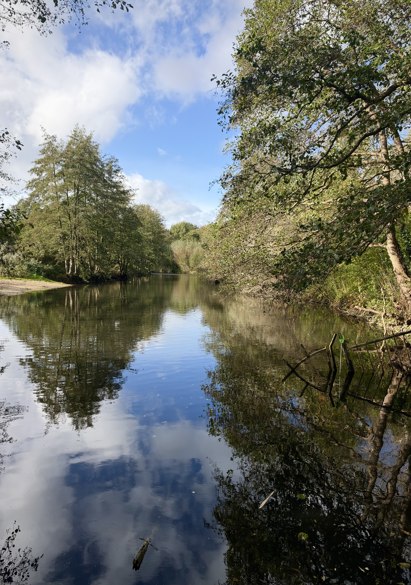
蒙上水珠
刚来Alkmaar时是个夜晚。陌生的街道，远离商业区的烟火。骑自行车的人呼啸而过 ——
他们在空间中穿行是多么轻快敏捷！我感到被落下了。
三日内，同样一条街道已经被正着反着走了多遍。
早晨，阴沉但空气清新。双腿等不及地先于脑袋规划好动向就踏出了门。一个没有目的地的人怎样选择岔路？
在每一条巷口都要做一个拐与不拐的选择。多重几何形状的屋顶，令人踏实心安的地砖，从墙壁伸出来的店铺招牌，
窗户中渗透出的暖光 —— 即便是在巷子尽头 —— 都是诱人的项目。
傍晚，大风。每棵树的上半截都在咆哮，以至于我听不到马路上车辆疾驰的声音。车辆仿佛无声地平移进我的视野，又平移出去。
居民区一角的口袋公园，狭长，没有什么密实的林子，却显得无与伦比地骚动。
日已完全沉，微雨。河边的步道只借到了粼粼水波反射起的光，而这光来自对岸的房屋。
灌木被蒙上了水珠，我也被蒙上了水珠。我想象着前方柳树下会不会忽然出现一个黑影，例如一个不明生物的黑影。
若真的有，我可能会再想起来要逃跑之前，定睛看几秒，感受着自己马上就要被吃掉了，然后问它：你能不能听得懂英语。
我听着自己的脚步声，单调的脚步声，仿佛这条径上前无古人，后无来者。
我像是还听到一个陪伴的脚步声 —— 也是我的脚步，来自远处，来自尚未到来的日子。时而清楚，时而被风盖住。
一个没有目的地的人怎样选择岔路？山高路远，天宽水长的时候，巷口是什么？
几何形状的屋顶，令人心安的地砖，探头探脑的招牌，渗出窗户的暖光 —— 即便在巷子尽头 —— 它们都是什么？
我好似在拐与不拐之间总是倾向于“拐”。有时转的弯很细小，等我回想，往后的日子已经微微向它倾斜。
我想同尚未成形的自己说话，即便我听不懂她的回应是什么意思。
我播放了熟悉的一首歌，我听到轻声细语的诉说：奔涌的岁月自带一种节奏，能保持灯影不移，色彩不褪。
这日渐浅薄，日渐贫瘠的世界，给你留下一篮空荡荡，别无他物只有梦。在新的一天升起时，记着望向太阳。
我合上双眼，视野左下方被一大块模糊的透明玻璃挡住，玻璃离我很近，也许是一个水晶球，或者玻璃杯。
右上方是仰视视角看到的树冠。枝叶茂密争抢着掩护蓝天。我获得一束急促纯净的欣喜。
随后看到了深红的枫叶和孤独的铁轨。铁道上的石块似乎在言传身教以怎样的姿态等待是正确的。
正中央黑色的火车头挑战目力的极限。瞬时间火车道旁边长出了仓库。还有带有塑料罩子的信号灯，铁轨旁边给火车看的那种。
画面重启，出现了一团白色和绿色杂糅的橡皮泥，又像是大理石花纹，它泡进水里，化开了。白色的雾气是翡翠般的湖披戴的面纱。
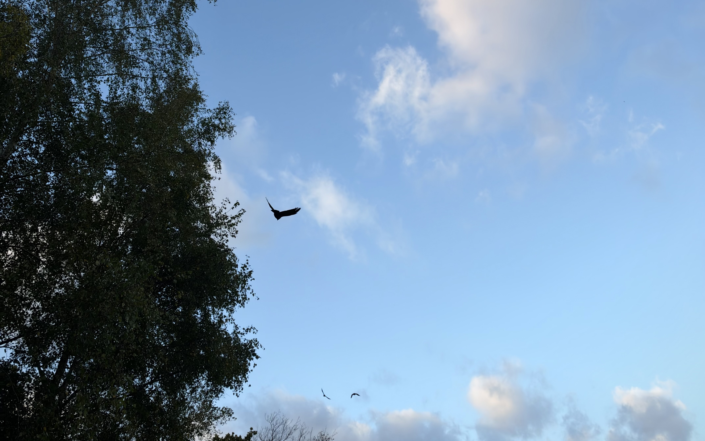
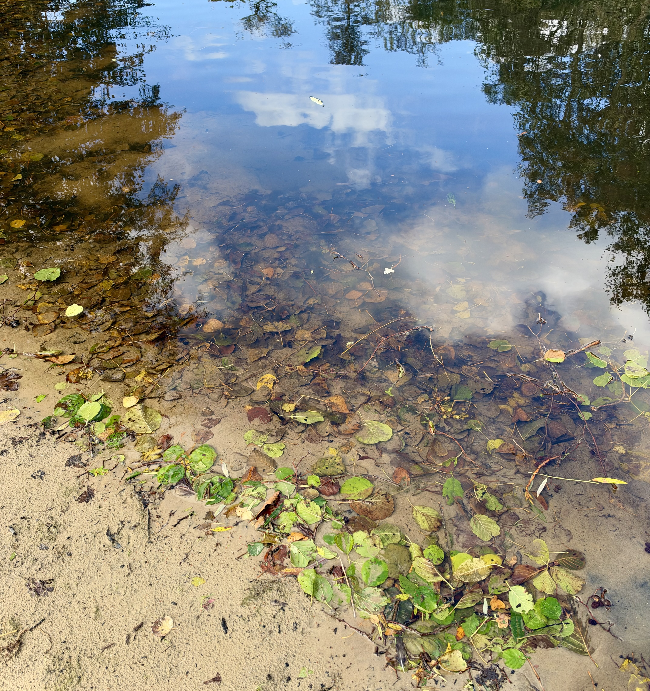